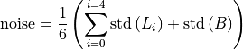
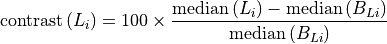

Planar imaging module¶
This module is used to test the constancy of two-dimensional MV or kV image. All three phantoms recognized by Pylinac can be used:
Standard Imaging QC3
Leeds TOR 18
Las Vegas
In order to be able to compare image quantifiers with the baseline, you have the option of saving a reference image into the QAserver folder structure. This image can then be analyzed at the same time as the currently acquired image.
Read 1 and 2 so that you will be able to understand the analysis.
Options¶
- Image
The acquired image. If Analyze reference? is unchecked, only this image will be analyzed.
- Phantom
A list of available phantoms recognized by Pylinac. Always pick the correct phantom.
- Imager
Here you can select the reference image of the phantom for a particular machine (imager). See “Configuration” for more details about how to add reference images to QAserver. If you don’t have a reference image prepared, then skip this setting, and untick the Analyze reference? checkbox.
- Clip box
Here you can enter the size of the central portion of the image beyond which pixel values will be set to background signal. If you don’t want to clip the image, put 0.
- LeedsTor rot
Here you can force the angle of the Leeds TOR phantom.
- Show bounding box?
If checked, a bounding box will be drawn around the phantom, and the image will be zoomed-in.
- Invert image?
Check this if you need to invert the image.
- Use Pylinac?
If checked, the analysis will give original Pylinac results. If unchecked, the analysis will be performed with Pylinac, however the results will be presented in a slightly different fashion (see further down for more explanation).
How to use the module¶
Acquire your image in such a way that Pylinac will be able to analyze it.
To set a reference for comparison have your engineers optimize image quality, then acquire a good image that satisfies your clinical demands. This image can then be downloaded from Orthanc and stored into QAserver for future use.
Select the appropriate Phantom. If the reference image is available, it will show up in the dropdown menu (Imager). If not, then you can work without them. In this case uncheck Analyze reference?.
Regions of interest (ROIs)¶
Pylinac will find several ROIs on each phantom. The following image shows ROIs for each phantom. Red circles mark those ROIs that are used for studying contrast (low frequency contrast resolution), blue circles are those ROIs that are used for studying MTF (high frequency contrast resolution) and yellow circles are the background ROIs.
When Use Pylinac? is checked, both low contrast and high contrast ROIs will be colored blue or red depending on whether they pass the threshold tolerance. If Use Pylinac? is unchecked, low contrast ROIs will always be colored red, and high contrast ROIs will always be colored blue (no passing tolerance is applied in this case). Background ROIs are always colored yellow.
We denote low contrast, high contrast, and background ROIs with
Where L stands for low frequency ROI, H for high frequency ROI and B is the background.
The QC3 phantom has 5 high frequency ROIs, 5 low frequency ROIs, and one background ROI:
The LeedsTOR phantom has 9 high frequency ROIs with 2 corresponding background ROIs, and 18 low frequency ROIs with corresponding 18 background ROIs.
The Las Vegas phantom has 20 low frequency ROIs and 4 background ROIs.

Once ROIs are defined, pixel values within can be extracted from the image. Random noise is not calculated according to [2], instead the standard deviation of pixel values within low contrast or background ROIs is used.
QC3 Analysis¶
Use Pylinac? checked¶
Low-frequency contrast for each L is calculated as the low-frequency constant, which is the product of contrast and the diameter of the ROI.
The green line on the low-frequency plot represents the low_threshold defined in the configuration file. If the contrast constant is above the green line, the ROI is considered “visible”.
Contrast-to-noise ratio is defined as
Relative modulation transfer function is calculated as

Note that it is normalized to 1 for the first high-frequency region. The green line on the plot represents the high_threshold defined in the configuration file. If the points are above the green line, then the lines in the corresponding region can be resolved.
Relative lppmm are calculated for 30%, 40%, 50% and 80% rMTF. The result is not in units of lppmm.
Median contrast is calculated as the median of contrast values for all low-frequency regions. Note that this is not the median of contrast constants.
Median CNR is calculated as the median of all CNR values.
Use Pylinac? unchecked¶
The analysis is similar, however these definitions are in use.
Low-frequency contrast:
Relative modulation transfer function:
lppmm is returned in real units based on the calibration of line pairs in the configuration file.
Noise is the average value of standard deviations for all low-frequency regions and the background region:

Contrast-to-noise ratio is calculated like this:
CNR is the CNR of the first low-frequency region.
Leeds TOR Analysis¶
Use Pylinac? checked¶
Pylinac uses a different background for each low-frequency ROI.
Low-frequency contrast is again the product of contrast and the ROI diameter:
The green line on the low-frequency plot represents the low_threshold defined in the configuration file. If contrast-constant is above the green line, the ROI is considered “visible”.
Contrast-to-noise ratio is defined as
Relative modulation transfer function is calculated like this:
The function is normalized to 1 at the two background ROIs, if one is to take these two ROIs to form a starting line-pair region. Note that beause of this the plot is shifted to the right by one region. The green line on the plot represents the high_threshold defined in the configuration file. If the points are above the green line, then the lines in the corresponding region can be resolved.
Relative lppmm are calculated for 30%, 40%, 50% and 80% rMTF. The result is not in units of lppmm.
Median contrast is calculated as the median of contrast values for all low-frequency regions. Note that this is not the median of contrast-constants.
Median CNR is calculated as the median of all CNR values.
Use Pylinac? unchecked¶
Low-frequency contrast:

Relative modulation transfer function:
rMTF is normalized to 1 at the max value, usually at H0.
lppmm is returned in real units based on the calibration of line pairs in the configuration file.
Noise is the average value of standard deviations for all low-frequency background regions:
Contrast-to-noise ratio is calculated like this:
CNR is the CNR of the first low-frequency region.
Las Vegas analysis¶
The Las Vegas phantom has only low-frequency regions.
Use Pylinac? checked¶
Low-fequency constant is the product of contrast and the diameter of the ROI:
Where the average background is
The green line on the low-frequency plot represents the low_threshold defined in the configuration file. If contrast constant is above the green line, the ROI is considered “visible”.
Contrast-to-noise ratio is defined as
Median contrast is calculated as the median of contrast values for all low-frequency regions. Note that this is not the median of contrast constants.
Median CNR is calculated as the median of all CNR values.
Use Pylinac? unchecked¶
Low-frequency contrast:
Noise is the average of standard deviations for all low-frequency background regions:
Contrast-to-noise ratio is calculated like this:
CNR is the CNR of the fourth low-frequency region.